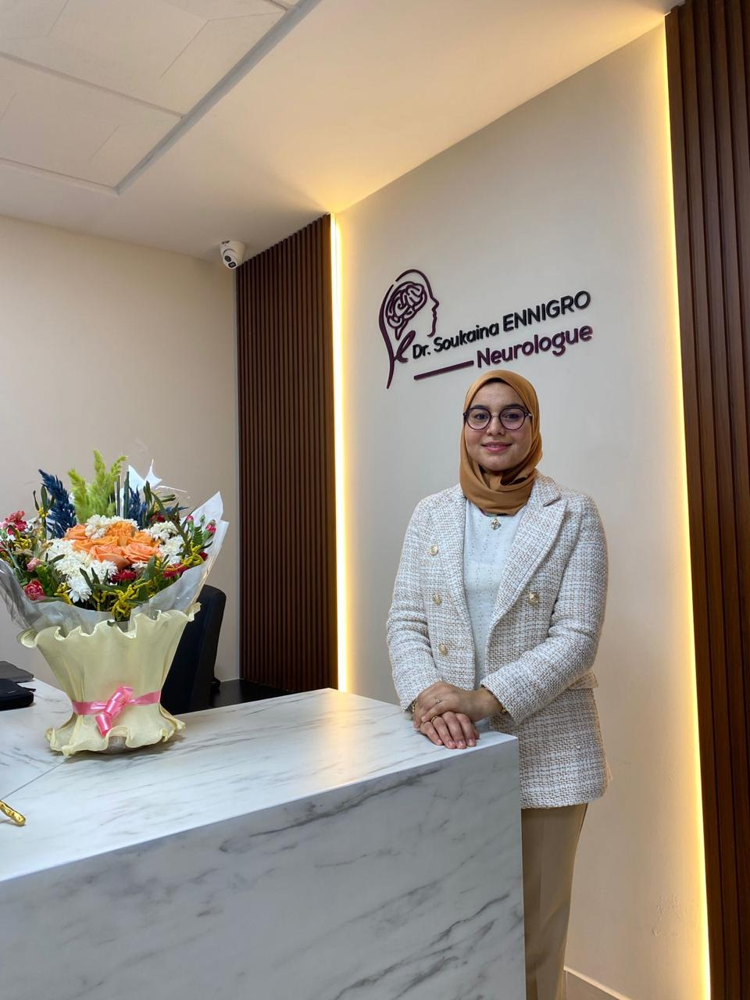
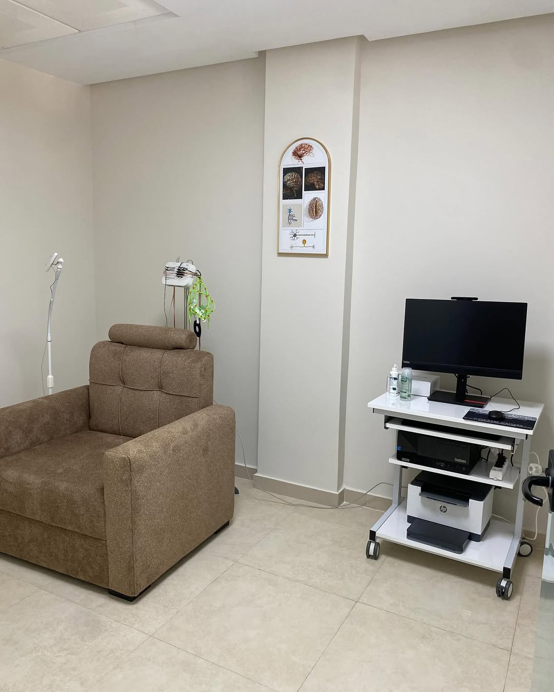
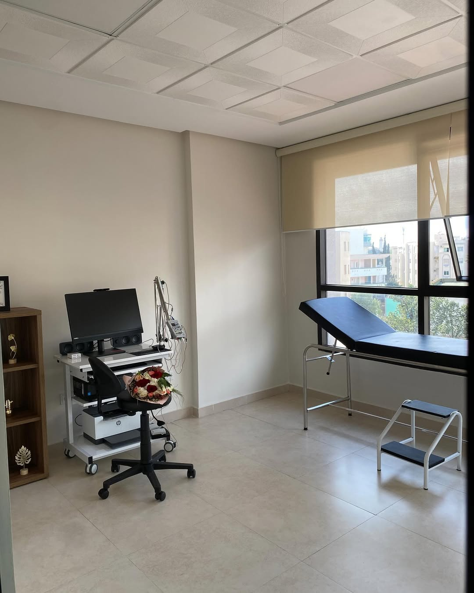

NEUROLOGIE ADULTE & ENFANT
Neurologue
à Casablanca.
Dr Soukaina ENNIGRO
Une écoute attentive.
Une prise en charge qui vous ressemble.
Consultations spécialisées, EEG et ENMG au sein d’un cabinet pensé pour votre confort, à Sidi Maarouf.
Rendez-vous par téléphone · +212 5 22 58 02 02
EEG & ENMG sur place
Casablanca, Sidi Maarouf

Dr Soukaina ENNIGROMédecin spécialiste en neurologie
VOTRE NEUROLOGUE
L’expertise médicale.
L’attention humaine.
Comprendre votre histoire, prendre le temps de vous écouter et vous accompagner dans votre parcours de soins.
Spécialiste en neurologie formée à Casablanca, le Dr ENNIGRO Soukaina a effectué son internat à l’hôpital Ibn Rochd avant de poursuivre sa spécialité en neurologie générale.
01
Formation en neurologieCasablanca · Hôpital Ibn Rochd
02
Expérience hospitalière internationaleStage aux Hôpitaux Universitaires de Marseille – La Timone
03
Formation aux urgences AVCDiplôme à la Faculté de Médecine et de Pharmacie de Fès
CONSULTATIONS & SUIVI
Une prise en charge
adaptée à chacun.
De l’évaluation initiale au suivi, une approche clinique personnalisée pour les troubles du cerveau, des nerfs et des muscles.
Épilepsie de l’adulte et de l’enfant
Accidents vasculaires cérébraux (AVC)
Maladie de Parkinson et tremblements
Sclérose en plaques et maladies inflammatoires du système nerveux central
Pathologies des nerfs et des muscles
Vertiges
Démence et maladie d’Alzheimer
Les consultations s’adressent aux adultes et aux enfants. En cas d’urgence, contactez immédiatement les services d’urgence.
EXPLORATIONS AU CABINET
Mieux comprendre.
Mieux vous accompagner.
Des examens neurophysiologiques réalisés sur place, selon l’indication médicale.

01 / EEGÉlectroencéphalogramme
L’EEG étudie l’activité électrique cérébrale. Il est notamment utilisé dans l’évaluation de l’épilepsie, des troubles de la conscience et d’autres pathologies neurologiques.
Se renseigner sur l’EEG
02 / ENMGÉlectroneuromyogramme
L’ENMG explore les nerfs périphériques et les muscles. Il permet d’orienter le diagnostic des neuropathies, des radiculopathies et des atteintes neuromusculaires.
Se renseigner sur l’ENMGBIENVENUE CHEZ NOUS
Un cadre apaisant.
Des soins en confiance.
Découvrez les espaces du cabinet avant votre première visite, de l’accueil aux salles d’exploration.
01 / Accueil du cabinetPhotos réelles · Montage animé
La vidéo n’est pas disponible. Découvrez les mêmes espaces dans la galerie ci-dessous.
DÉCOUVRIR LES LIEUX
Votre visite
commence ici.
Une visite animée à partir des photographies réelles du cabinet.
Sans son · Lecture à votre rythme
LE CABINET, EN DÉTAIL
Faites défiler les photos


VOS MOTS COMPTENT
Ils partagent
leur expérience.
Neurologue très compétente et humaine. Elle prend le temps d’étudier les dossiers, et de répondre à toutes les questions et d’expliquer les choses de façon claire et rassurante.
Une neurologiste exceptionnelle ! Très à l’écoute, elle prend le temps de bien expliquer et de répondre aux questions avec patience et bienveillance.
Gentille très professionnelle et à l’écoute de ses patients. Je recommande vivement son cabinet. Chapeau
Dr ennigro est très humaine, compétente et à l’écoute
Docteur à l’écoute, disponible, prend le temps nécessaire pour le diagnostic et fournit toutes les réponses nécessaires afin de réconforter les patients
Une sélection d’avis. Les expériences sont personnelles.
FAISONS LE PREMIER PAS
À votre écoute,
tout simplement.
Pour prendre rendez-vous ou préparer votre venue, contactez directement le cabinet.
Cabinet de neurologie
du Dr ENNIGRO Soukaina
Nous trouver
Boulevard Abou Baker El Kadiri, Résidence Panorama, GH1, Immeuble 1, 2e étage, Bureau N9, Casablanca, Maroc Préparer mon itinéraireHoraires du cabinet
- Lundi – Vendredi
- 09h00 – 17h00
- Samedi
- 09h00 – 13h00
- Dimanche
- Fermé
AVANT VOTRE VENUE
Quelques repères.
Comment prendre rendez-vous ?
Appelez le +212 5 22 58 02 02 pendant les horaires d’ouverture, ou contactez le cabinet sur WhatsApp. L’équipe vous proposera un créneau disponible.
Les enfants peuvent-ils consulter ?
Le cabinet accueille les adultes et les enfants pour une consultation de neurologie. Précisez l’âge du patient au moment de prendre rendez-vous.
Où se déroulent les examens EEG et ENMG ?
Les examens sont réalisés au cabinet. Lors de la prise de rendez-vous, l’équipe vous indiquera les modalités adaptées à votre examen.